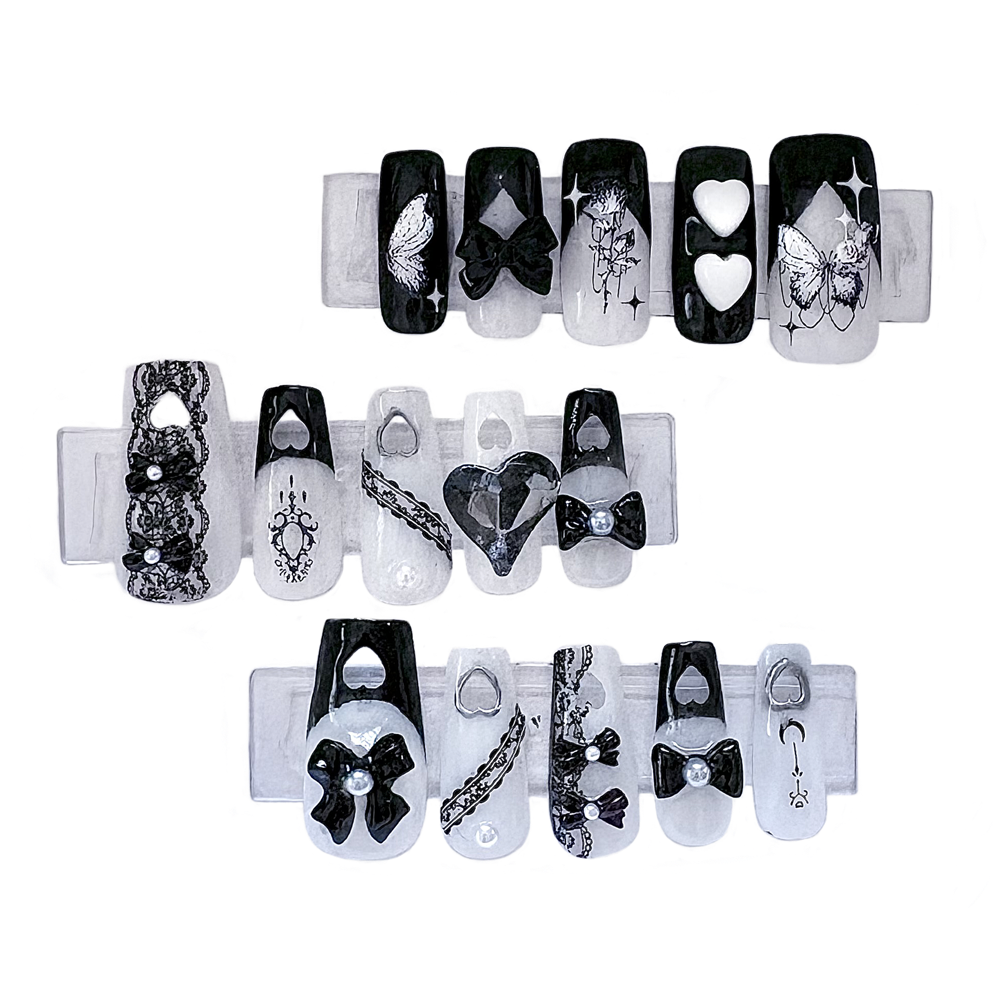
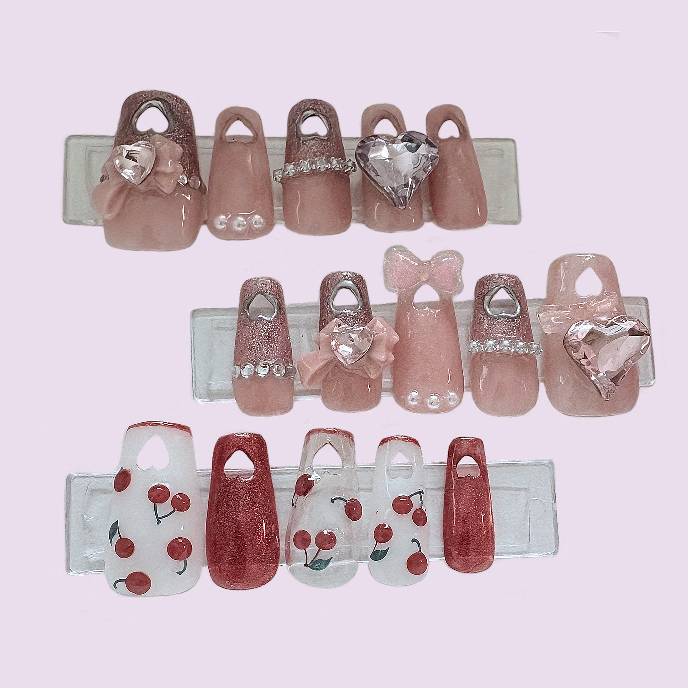

OTHER
そのほか
今まで趣味で手掛けてきたものたちです。
以下は代表例ですが、何事に関しても 自分の手で実現させることにやりがいを感じます。
1. ネイルチップ制作（オリジナルデザイン）
販売/受注依頼などの経験有り

○ご注文の品
台紙に張り付けたのち、プラスチックケース / 小さめのジップロックに入れて販売。
○正月＆日本の伝統モチーフネイル
積極的に和柄を取り入れつつ、金色で締めることで格式高さを表現。爪の上という狭い世界の中に日本の伝統の美しさを詰め込みたかった。
○居酒屋ネイル
３Dネイルパーツ作成用の粘土などで、居酒屋の雰囲気を再現。
○麻雀牌ネイル
好みによって長さ / 形状の変更可能。

○天使と悪魔モチーフネイル
同じ色のミラーネイルを仕込むことで統一感を出しつつ、対極の魅力を表現したかったもの。




2. 受託制作（版権NG,オリジナルのみ）

・5年前から継続して、ご依頼を受けさせていただいています。
3. ぬいぐるみ制作
・中に磁石を入れたのでくっつく仕様
・友人の入院が決定した際、自分もなにかしたいと思い制作したもの。中にお守り入り。